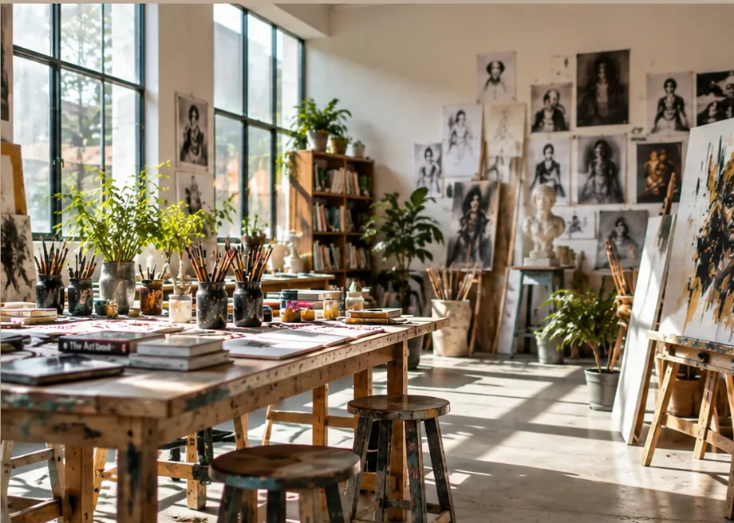
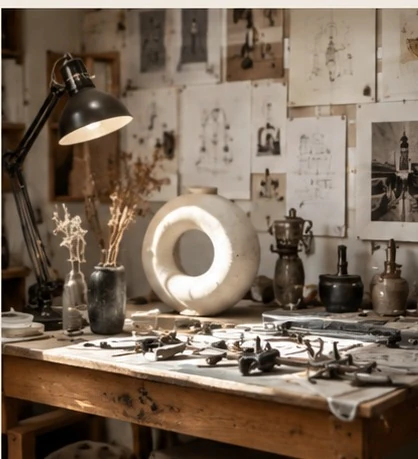
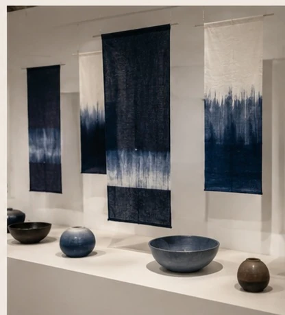
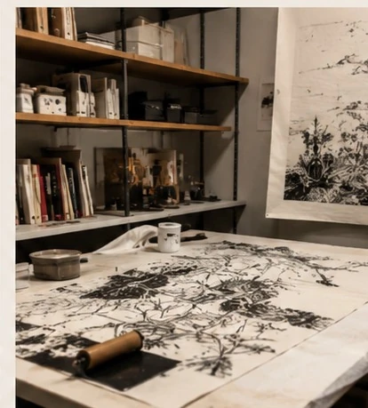
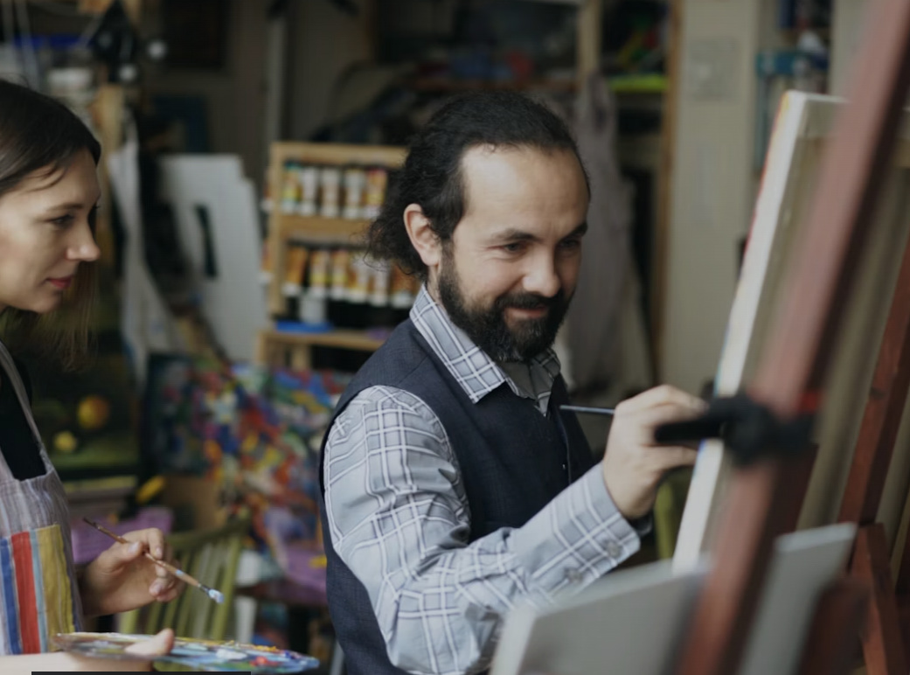

Degree Show 2026
Final-year work across art, design, fashion and new media.
View exhibitionSTUDIO-LED EDUCATION
An ambitious creative institute where artists and designers learn through practice, conversation, experimentation and exhibition.

 DETAIL / 02
DETAIL / 02
 PUBLIC / 03
PUBLIC / 03
Choose a discipline, cross the boundaries, and build a practice that feels unmistakably yours.
Explore all disciplines
Open studios, critique rooms, specialist labs and public exhibitions keep ideas moving beyond the classroom.
Explore campus lifeLook closely. Make deliberately. Question everything. Put the work in front of people.
Ideas take shape through sketches, systems, materials and experiments. See the thinking before the final piece.
SCROLL / EXPLORE
01 VIEW PROJECT
02 VIEW PROJECT
03 VIEW PROJECT
05 / PEOPLE — STUDIO PRACTICEArtists, designers, photographers, curators and makers bring active practices into every studio. Your mentors are people who know what it means to make unfinished work public.
Meet the facultyTalks, exhibitions, workshops and open studios bring the institute beyond its walls and into conversation with the wider creative community.
All eventsFinal-year work across art, design, fashion and new media.
View exhibitionStudio notes, process stories and conversations that keep creative practice moving.
Read the journalWe are looking for curiosity, process and a point of view — not perfect polish.
Start your applicationShow us how you think, what you make and where you want to take it next.